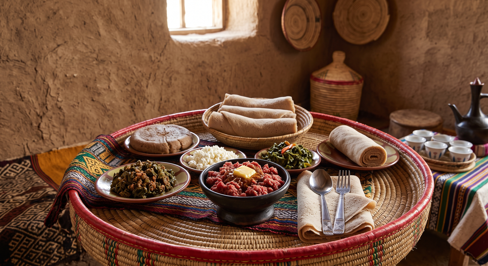

Kitfo

Description
this is ethiopian traditional food named kitfo made by using raw meat and other ingredients
Ingredients:
- 1 lb very lean beef (top round or sirloin), finely minced or ground
- 1/4 cup Niter Kibbeh (Ethiopian spiced clarified butter), melted
- 1 to 2 tablespoons Mitmita (Ethiopian spiced chili powder)
- 1/2 teaspoon Korarima (Ethiopian cardamom), ground
- Salt to taste
- Ayibe (Ethiopian cottage cheese) for serving
- Gomen (minced collard greens) for serving
Steps
- In a pan over very low heat, gently melt the Niter Kibbeh. Do not let it boil or get too hot.
- Stir the Mitmita and Korarima into the warm butter until well combined.
- Remove the pan from the heat and add the finely minced beef. Gently mix until the meat is evenly coated with the spiced butter.
- For "Tire" (raw, traditional style), serve immediately. For "Leb Leb" (lightly cooked), return the pan to very low heat and gently toss for 1-2 minutes until just warmed through.
- Serve immediately with Ayibe (cottage cheese), Gomen (collard greens), and fresh injera.